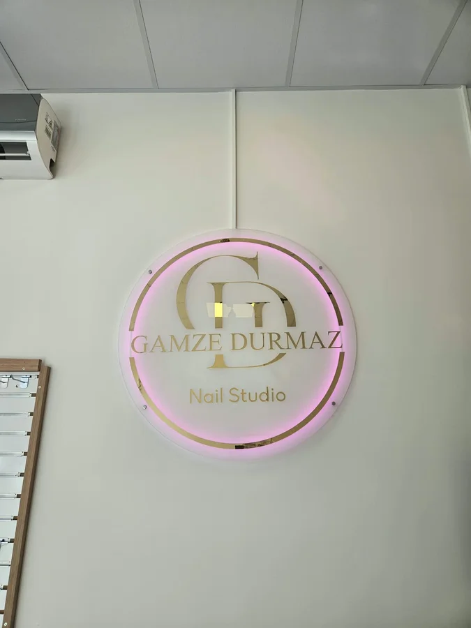
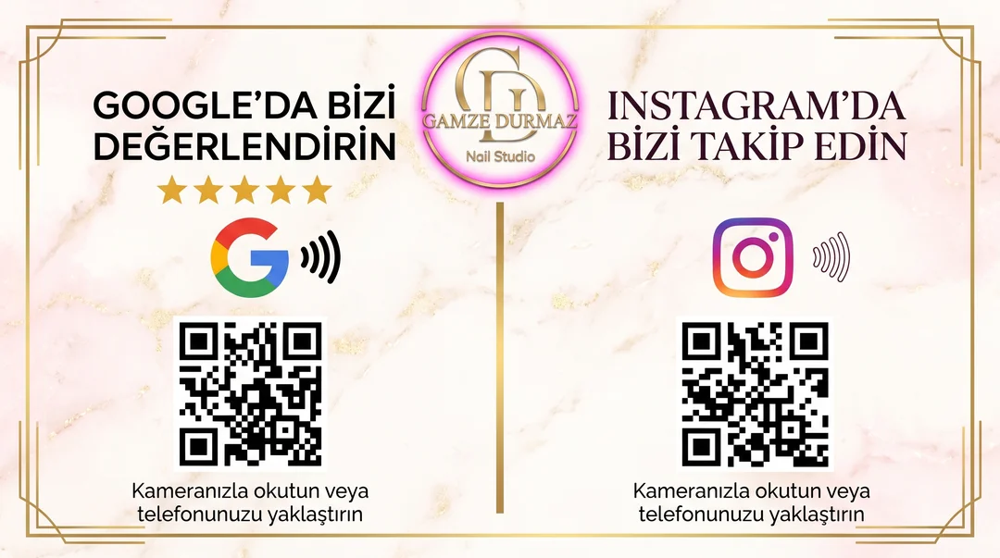

Ellerinizdeki Sanat,
Gamze Durmaz
Zarafetiyle Buluşuyor
Kişiye özel tasarım protez tırnak, medikal manikür, kedi gözü manyetik ışıltısı, 3D el işçiliği nail art ve ipek kirpik uygulamalarıyla hayalinizdeki kusursuz görünümü gerçeğe dönüştürüyoruz.
Kusursuz Tırnak Koleksiyonu
Gamze Durmaz Nail Studio'da her tırnak, kişiye özel bir sanat eserine dönüşür. Beğendiğiniz modeli seçin, tek tıkla randevunuzu rezerve edin.
Tırnak Tasarımını Kendin Oluştur
Hayalinizdeki tırnak formunu, işlem tipini ve nail art detaylarını seçin; tahmini süreyi ve bütçeyi anında hesaplayın.
1 Tırnak Formunu Seçin
2 Uygulama Türü
3 Nail Art & Tasarım Detayı
4 Ekstra Dokunuşlar & Bakım
Özel Tırnak Paketiniz
*Fiyatlar tırnak yapısına ve talep edilen özel detaylara göre teyit edilir.
Lüks Stüdyo Hizmetleri
Gamze Durmaz güvencesiyle, birinci sınıf Avrupa standartlarında tırnak ve kirpik bakım protokolleri.
Protez Tırnak (Jel Sistem)
Tırnak kırılmalarına, tırnak yeme alışkanlığına son veren; doğal tırnağınıza zarar vermeden şablon sistemiyle milimetrik form kazandırılan güçlü uzatma uygulaması.
- Şablon / Dual form ile kusursuz form
- Hafif, dayanıklı ve esnek yapı
- 4 ila 5 hafta sorunsuz kullanım
- Her zevke uygun uzunluk ve şekil
Kalıcı Oje & Kauçuk Taban
Doğal tırnaklarınızı soymadan, kauçuk bazlı güçlendirici katman ile 3-4 hafta boyunca çizilmeyen, soyulmayan ve ilk günkü ayna parlaklığını koruyan renk uygulaması.
- 100+ zengin renk ve pastel ton seçeneği
- Ayna parlaklığında üst katman (Top Coat)
- Tırnak yüzeyini sararmaktan korur
- UV/LED lamba ile anında kuruma
Kuru / Medikal Freze Manikür
Su kullanılmadan, elmas ve korundum freze uçları ile tırnak etlerinin milimetrik ve acısız temizlendiği, tırnak uzamasını hızlandıran Rus manikür tekniği.
- Et kesilmeden pürüzsüz kütikül temizliği
- Şeytantırnağı oluşumunu önler
- Ojenin tırnak dibine tam oturmasını sağlar
- %100 steril, tek kullanımlık aparatlar
Özel 3D Nail Art & Tasarım
Göz kamaştırıcı kedi gözü velvet efektleri, leopar animal print desenleri, el çizimi çiçekler, 3D kabartmalar ve orijinal Swarovski kristal taş kompozisyonları.
- Kişiye özel serbest el çizim sanatı
- Manyetik kedi gözü renk oyunları
- Düşmeyen özel jel sabitlemeli taşlar
- Gelin ve özel gece konsept tasarımları
İpek Kirpik & Lash Lifting
Gamze Durmaz Nail & Lash (@gdnaillash) çatısı altında; bakışlarınıza derinlik katan, doğal kirpiklerinizi dökmeyen ipeksi kirpik ve keratin besleyici lifting bakımı.
- Klasik, Vizon, Volume ve Mega Volume
- Göz yapısına özel kıvrım ve uzunluk
- Hafif ve batma yapmayan medikal yapıştırıcı
- Maskaraya veda ettiren kıvrık etki
Tırnak Güçlendirme & IBX Bakım
Yıpranmış, soyulan veya zayıflamış tırnak plakalarını tırnağın içine nüfuz ederek derinlemesine onaran, kırılmaları durduran yoğun keratin ve vitamin terapisi.
- Tırnağın iç katmanlarını birbirine bağlar
- Soyulma ve çatlamaları onarır
- Protez öncesi koruyucu kalkan oluşturur
- Doğal ve sağlıklı uzamayı destekler

Güzelliğiniz Kadar Sağlığınız da Değerli
Gamze Durmaz Nail Studio olarak, kusursuz estetiğin yalnızca tavizsiz hijyenle mümkün olduğuna inanıyoruz. Salonumuzda ağırladığımız her danışanımız için tıbbi standartlarda dezenfeksiyon ve kişiye özel sterilizasyon protokolleri uyguluyoruz.
Danışanlarımızın Gözünden Gamze Durmaz
Google'da ve stüdyomuzda aldığımız %100 memnuniyet geri bildirimleriyle gurur duyuyoruz.

Hızlı QR Bağlantıları
Telefonunuzla okutarak stüdyomuzu değerlendirebilir veya Instagram'da takip edebilirsiniz.
"Gamze Hanım tırnak konusunda bir dahi! Daha önce gittiğim yerlerde tırnaklarım hep kırılıyordu, burada yaptırdığım jel protez 5 haftadır sağlamlığını koruyor. Kuru manikür işçiliği o kadar temiz ki tırnak etlerimde tek bir pürüz kalmadı. Kesinlikle vazgeçilmezim!"
"Kedi gözü velvet tırnak yaptırdım, ışıkta parlamasına bayıldım! Herkes tırnaklarımı nereden yaptırdığımı soruyor. Stüdyonun temizliği, otoklav poşetlerinin yanımda açılması bana inanılmaz bir güven verdi. Emeğinize sağlık."
"Leopar French çalışması bir sanat eseri oldu. Gamze Durmaz Nail Studio'nun güler yüzü, kahve ikramı ve samimiyeti şahane. Hem protez tırnak hem kirpik için tek adresim artık burası."
Aklınıza Takılan Tüm Sorular
Protez tırnak, kalıcı oje ve bakım protokollerimiz hakkında en çok merak edilen detaylar.
Hemen Randevunuzu Oluşturun
Aşağıdaki formu doldurarak veya doğrudan WhatsApp hattımızdan bizimle iletişime geçebilirsiniz.
Stüdyo Bilgileri
Sorularınız, tasarım danışmanlığı veya özel gün hazırlıklarınız için daima yanınızdayız.
Pazar: Randevu ile
Online Randevu Talebi
Formu tamamlayın, talebinizi anında WhatsApp'tan onaylayalım.